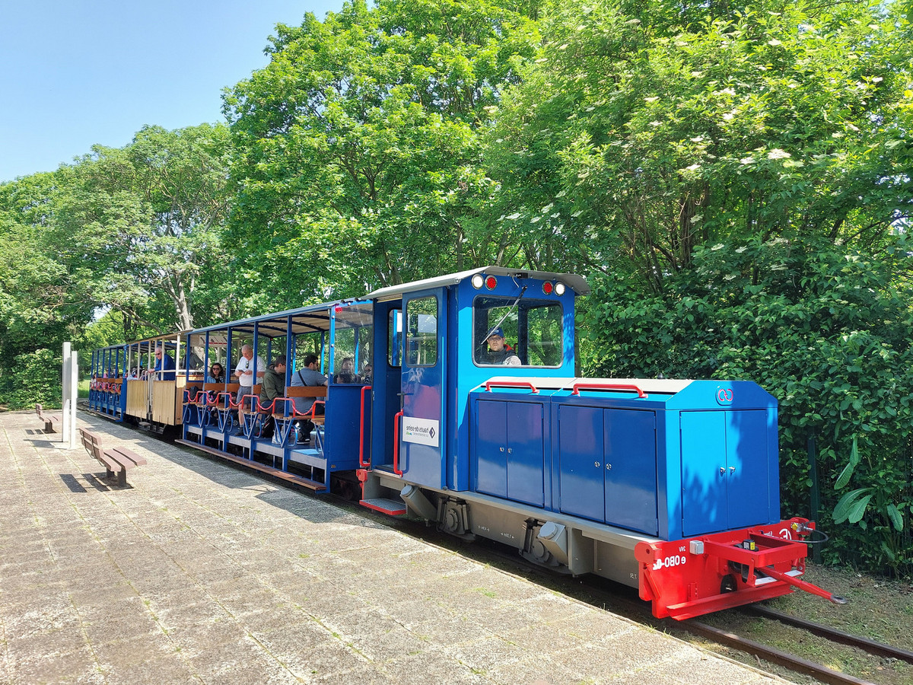
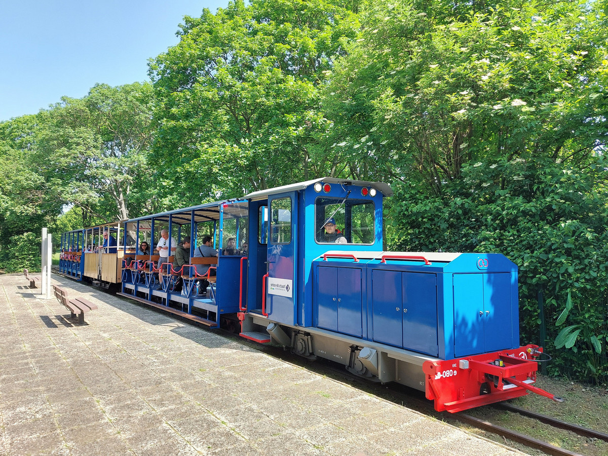

Plongez dans l'aventure au Zoo Arcadia !
Bienvenue sur le site du Zoo Arcadia ! Nous sommes ravis de vous accueillir dans notre univers animalier. Découvrez une expérience unique au cœur de la nature, où vous pourrez explorer nos habitats diversifiés et rencontrer une variété d'animaux fascinants.
Préparez-vous à être émerveillés par nos expositions captivantes et profitez de nos nombreux services, des visites guidées à nos espaces de restauration. Nous nous engageons à vous offrir une visite mémorable, riche en découvertes et en moments de partage.
 
